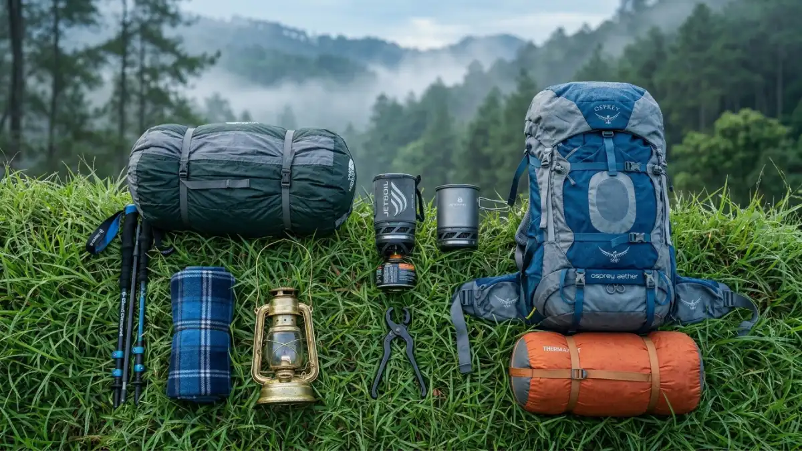
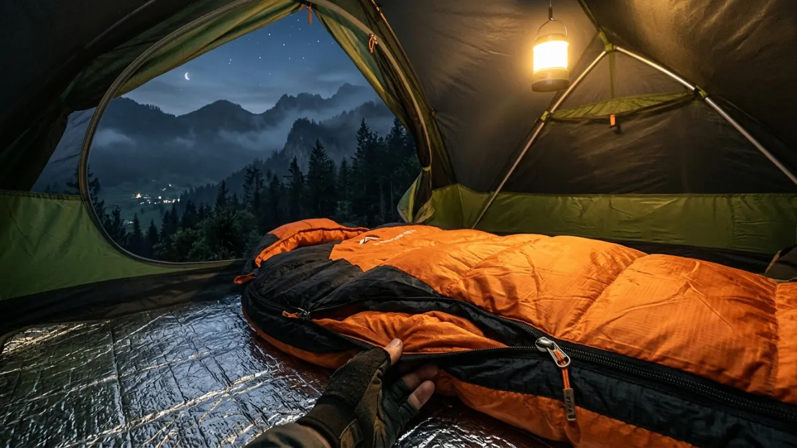

Perlengkapan camping di Alam Batu mencakup tenda, sleeping bag tahan dingin, pakaian berlapis, kompor portable, P3K, dan penerangan, yang semuanya disesuaikan dengan kondisi suhu dingin dan cuaca pegunungan Kota Batu.Perlengkapan camping di Alam Batu mencakup tenda, sleeping bag tahan dingin, pakaian berlapis, kompor portable, P3K, dan penerangan, yang semuanya disesuaikan dengan kondisi suhu dingin dan cuaca pegunungan Kota Batu.
- Mengapa Memilih Perlengkapan yang Tepat Sangat Penting untuk Camping di Batu?
- Apa Saja Perlengkapan Tidur yang Wajib Dibawa untuk Camping di Batu?
- Perlengkapan Pakaian yang Harus Disiapkan untuk Camping di Alam Batu
- Perlengkapan Masak dan Konsumsi untuk Camping di Batu
- Perlengkapan Keselamatan dan P3K yang Tidak Boleh Ditinggal
- Perlengkapan yang Paling Sering Terlupakan Saat Camping di Batu
- FAQ
Mengapa Memilih Perlengkapan yang Tepat Sangat Penting untuk Camping di Batu?
Perlengkapan yang tidak sesuai dengan kondisi alam Batu adalah penyebab utama ketidaknyamanan bahkan insiden keselamatan saat camping di kawasan pegunungan ini.
Menurut catatan komunitas hiking Jawa Timur, lebih dari 60 persen keluhan pengunjung saat camping di kawasan alam dataran tinggi Jawa Timur berhubungan dengan kedinginan di malam hari akibat perlengkapan yang tidak memadai, bukan karena kondisi cuaca ekstrem.
Data ini menunjukkan bahwa persiapan perlengkapan yang tepat jauh lebih menentukan kualitas pengalaman daripada kondisi alam itu sendiri.
Kota Batu dengan ketinggian rata-rata 800 meter di atas permukaan laut memiliki pola cuaca yang bisa berubah cepat.
Siang hari bisa terasa hangat bahkan panas, namun malam hari bisa sangat dingin dan berangin. Kondisi inilah yang membuat pemilihan perlengkapan harus tepat dan tidak boleh dikompromikan.
Apa Saja Perlengkapan Tidur yang Wajib Dibawa untuk Camping di Batu?
Perlengkapan tidur adalah kategori paling kritis untuk camping di Alam Batu mengingat suhu malam yang bisa turun drastis dan membutuhkan insulasi yang memadai.
Tenda
Pilih tenda dengan minimal dua lapisan (inner dan fly sheet) yang memiliki waterproof rating minimal 1.500 mm HH (hydrostatic head).
Tenda dome berukuran dua orang atau empat orang adalah pilihan paling praktis untuk camping di Batu.
Sleeping bag
Gunakan sleeping bag dengan temperature rating 5 hingga 10 derajat Celsius untuk kenyamanan optimal di Batu.
Sleeping bag berbentuk mummy memberikan insulasi lebih baik dibanding sleeping bag rectangular. Pastikan sleeping bag dalam kondisi kering sebelum dimasukkan ke dalam tas.
Matras
Matras camping berfungsi memberikan insulasi dari tanah yang dingin, bukan hanya kenyamanan fisik. Pilih matras berbahan EVA foam atau matras inflatable dengan insulasi yang baik.
Tidur langsung di tanah tanpa matras akan membuat tubuh terasa kedinginan meski sleeping bag sudah cukup tebal.
Bantal perjalanan
Meski bukan keharusan, bantal perjalanan yang dapat dilipat kecil akan meningkatkan kualitas tidur secara signifikan.

Sleeping bag dengan temperature rating yang tepat adalah perlengkapan tidur paling penting untuk menghadapi suhu malam di Batu.Perlengkapan Pakaian yang Harus Disiapkan untuk Camping di Alam Batu
Pakaian berlapis adalah strategi terbaik untuk menghadapi perubahan suhu yang drastis antara siang dan malam di Batu.
Sistem berlapis yang disarankan:
- Lapisan dasar (base layer). Kaos berbahan moisture-wicking yang menyerap keringat dan menjaga tubuh tetap kering. Hindari kaos berbahan katun murni karena lambat kering dan dingin saat basah.
- Lapisan tengah (mid layer). Jaket berbahan fleece atau down yang memberikan insulasi panas. Ini adalah lapisan terpenting untuk malam yang dingin di Batu.
- Lapisan luar (outer layer). Jaket windbreaker atau jas hujan yang melindungi dari angin dan air. Pilih yang memiliki hood dan bisa dimasukkan ke dalam tas kecil saat tidak digunakan.
Pelengkap: kaos kaki tebal (minimal dua pasang), sarung tangan tipis, topi hangat atau kupluk, dan sandal untuk digunakan di area camp.
Perlengkapan Masak dan Konsumsi untuk Camping di Batu
Membawa perlengkapan masak sendiri akan menghemat biaya konsumsi secara signifikan dan memberikan fleksibilitas menu selama camping.
Kompor portable dan bahan bakar
Kompor gas portable kecil sudah cukup untuk kebutuhan memasak selama camping. Pastikan membawa tabung gas cadangan, terutama untuk camping lebih dari satu malam.
Panci serbaguna
Satu panci ukuran sedang yang bisa digunakan untuk merebus air, memasak nasi, dan membuat sup sudah mencukupi untuk dua hingga empat orang.
Alat makan
Bawa piring, sendok, dan gelas dari bahan ringan seperti aluminium atau plastik food-grade. Hindari membawa perlengkapan makan kaca atau keramik yang berat.
Air minum
Bawa minimal 2 liter air minum per orang per hari. Jika akan menggunakan sumber air alam, bawa filter air portabel atau tablet purifikasi air.
Pilihan menu praktis: nasi instan, mie instan, oatmeal, roti, selai, biskuit, cokelat, dan minuman hangat seperti teh atau kopi sachet.
Perlengkapan Keselamatan dan P3K yang Tidak Boleh Ditinggal
Perlengkapan keselamatan adalah investasi terpenting dalam setiap perjalanan camping, terlepas dari seberapa singkat atau dekat lokasi berkemah.
Kotak P3K wajib berisi:
- Plester luka berbagai ukuran
- Perban dan kasa steril
- Antiseptik cair atau gel
- Obat demam dan pereda nyeri
- Obat diare
- Obat anti alergi
- Gunting kecil dan pinset
- Termometer
- Peluit darurat
Perlengkapan penerangan: headlamp dengan baterai yang terisi penuh, ditambah baterai cadangan atau powerbank. Senter genggam sebagai cadangan juga sangat disarankan.
Tali dan perlengkapan serbaguna: tali paracord minimal 5 meter, duct tape kecil, dan pisau lipat multifungsi.
Perlengkapan yang Paling Sering Terlupakan Saat Camping di Batu
Meski sudah mempersiapkan daftar panjang, beberapa item kecil sering kali terlupakan dan justru berdampak besar pada kenyamanan.
Alas terpal atau groundsheet
Dipasang di bawah tenda untuk mencegah kelembaban dari tanah merembes ke dalam tenda. Sering kali diabaikan padahal sangat memengaruhi kualitas tidur.
Kantong sampah ekstra
Tidak hanya untuk menjaga kebersihan alam, kantong plastik juga berguna melindungi barang elektronik dan pakaian dari air.
Obat nyamuk
Meski udara Batu sejuk, nyamuk dan serangga tetap aktif terutama di area dekat air dan hutan.
Buku catatan atau agenda kecil
Berguna untuk mencatat hal penting atau sekadar mengisi waktu luang tanpa bergantung pada gadget.
Perlengkapan camping di Alam Batu harus disesuaikan dengan kondisi alam pegunungan yang sejuk dan cuaca yang berubah cepat.
Prioritaskan perlengkapan tidur yang hangat, pakaian berlapis, tenda waterproof, dan P3K dasar. Membawa perlengkapan yang tepat bukan soal membawa segalanya, melainkan membawa yang benar-benar dibutuhkan dan berfungsi optimal di kondisi alam Batu.
FAQ
1. Apakah bisa menyewa perlengkapan camping di Batu?
Ya, beberapa toko perlengkapan outdoor dan pengelola kawasan camping di Batu menyediakan layanan sewa tenda, sleeping bag, dan matras. Tarif sewa bervariasi, umumnya mulai dari Rp50.000 hingga Rp200.000 per item per malam.
2. Sleeping bag jenis apa yang paling cocok untuk suhu di Batu?
Sleeping bag dengan temperature rating comfort 10 derajat Celsius sudah cukup untuk musim kemarau di Batu. Untuk musim hujan atau camping di area ketinggian seperti Gunung Panderman, disarankan menggunakan sleeping bag dengan rating comfort hingga 5 derajat Celsius.
3. Apakah membawa kompor gas diperbolehkan di semua area camping Batu?
Sebagian besar kawasan camping mengizinkan penggunaan kompor portable, namun selalu konfirmasi terlebih dahulu ke pengelola. Beberapa kawasan konservasi membatasi penggunaan api untuk alasan keamanan lingkungan.